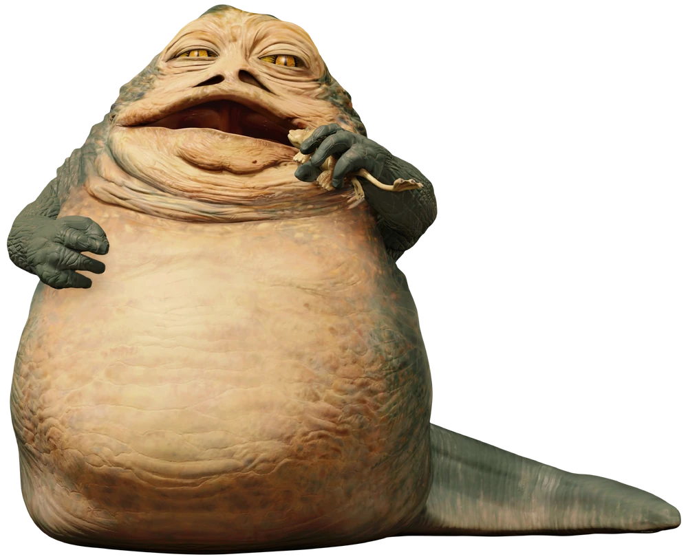

# A tibble: 87 × 14
name height mass hair_color skin_color eye_color birth_year sex gender
<chr> <int> <dbl> <chr> <chr> <chr> <dbl> <chr> <chr>
1 Luke Sk… 172 77 blond fair blue 19 male mascu…
2 C-3PO 167 75 <NA> gold yellow 112 none mascu…
3 R2-D2 96 32 <NA> white, bl… red 33 none mascu…
4 Darth V… 202 136 none white yellow 41.9 male mascu…
5 Leia Or… 150 49 brown light brown 19 fema… femin…
6 Owen La… 178 120 brown, gr… light blue 52 male mascu…
7 Beru Wh… 165 75 brown light blue 47 fema… femin…
8 R5-D4 97 32 <NA> white, red red NA none mascu…
9 Biggs D… 183 84 black light brown 24 male mascu…
10 Obi-Wan… 182 77 auburn, w… fair blue-gray 57 male mascu…
# ℹ 77 more rows
# ℹ 5 more variables: homeworld <chr>, species <chr>, films <list>,
# vehicles <list>, starships <list>02 - Visualisation de données
PRO1036 - Analyse de données scientifiques en R
Tim Bollé
September 15, 2025
Qu’est ce qu’un dataset ?
Terminologie
En français, on parle de jeu de données. Concrètement, c’est un tableau:
- Chaque ligne correspond à une
observation - Chaque colonne correspond à une
variable
Obiwan Kenobi
- Taille = 182cm
- Poids = 77kg
- Couleur des cheuveux = brun
- Couleur des yeux = gris-bleu
- Année de naissance = 57BBY
- Planète d’origine = Stewjon …

Jetons un coup d’oeil
Nous pouvons avoir une vue d’ensemble avec glimpse:
Rows: 87
Columns: 14
$ name <chr> "Luke Skywalker", "C-3PO", "R2-D2", "Darth Vader", "Leia Or…
$ height <int> 172, 167, 96, 202, 150, 178, 165, 97, 183, 182, 188, 180, 2…
$ mass <dbl> 77.0, 75.0, 32.0, 136.0, 49.0, 120.0, 75.0, 32.0, 84.0, 77.…
$ hair_color <chr> "blond", NA, NA, "none", "brown", "brown, grey", "brown", N…
$ skin_color <chr> "fair", "gold", "white, blue", "white", "light", "light", "…
$ eye_color <chr> "blue", "yellow", "red", "yellow", "brown", "blue", "blue",…
$ birth_year <dbl> 19.0, 112.0, 33.0, 41.9, 19.0, 52.0, 47.0, NA, 24.0, 57.0, …
$ sex <chr> "male", "none", "none", "male", "female", "male", "female",…
$ gender <chr> "masculine", "masculine", "masculine", "masculine", "femini…
$ homeworld <chr> "Tatooine", "Tatooine", "Naboo", "Tatooine", "Alderaan", "T…
$ species <chr> "Human", "Droid", "Droid", "Human", "Human", "Human", "Huma…
$ films <list> <"A New Hope", "The Empire Strikes Back", "Return of the J…
$ vehicles <list> <"Snowspeeder", "Imperial Speeder Bike">, <>, <>, <>, "Imp…
$ starships <list> <"X-wing", "Imperial shuttle">, <>, <>, "TIE Advanced x1",…Pour en savoir plus…
Pour avoir le plus d’information possible, l’aide reste la meilleure option
Description des données
Une information importante à connaitre est le nombre de ligne et de colonnes dans le jeu de données
Exploration de données
Qu’est ce que c’est ?
L’idée de l’exploration de données est de chercher à résumer les principales caractérostiques du jeu de données.
Souvent, cette analyse est visuelle: c’est de la visualisation de données !
Elle s’accompagne aussi d’analyses statistiques élémentaires.
Masse vs Taille
Comment décririez-vous la relation entre la masse et la taille ? Y a-t-il des outliers ?


Data Viz
Data Visualisation
“The simple graph has brought more information to the data analyst’s mind than any other device.” — John Tukey
La visualisation de données cherche à étudier comment représenter les données.
Il y a de nombreux outils pour la DataViz
- R est l’un d’eux
- Il y a plusieurs modules pour visualiser les données dans R
- Nous allons utiliser
ggplot2
- Nous allons utiliser
ggplot2
ggplot2fait partie du Tidyverse et sert à la visualisation de données- gg veut dire Grammar of Graphics
- Inspiré du livre Grammar of Graphics de Leland Wilkinson
Grammar of Graphics
Permet de décrire toutes les briques d’un graphe

Masse vs Taille
ggplot(data = starwars, mapping = aes(x = height, y = mass)) +
geom_point() +
labs(title = "Masse vs. taille des personnages Starwars",
x = "Taille (cm)", y = "Masse (kg)")Warning: Removed 28 rows containing missing values or values outside the scale range
(`geom_point()`).
Kesako
- Quelle fonction s’occupe du plotting ?
- Quel jeu de données est visualisé ?
- Quelles variables sont projetées sur quels éléments ( aesthetics ) du graphe ?
- Que siginifie le warning ?
Hello ggplot2 !
ggplot() est la fonction principale dans ggplot2. Elle est toujours présente.
Les graphes sont faits en couches. Nous pouvons les résumer de la manière suivante:
ggplot(data = [dataset],
mapping = aes(x = [x-variable], y = [y-variable])) +
geom_xxx() +
other optionsPourquoi visualiser ?
Le quartet d’Anscombe
set x y
1 I 10 8.04
2 I 8 6.95
3 I 13 7.58
4 I 9 8.81
5 I 11 8.33
6 I 14 9.96
7 I 6 7.24
8 I 4 4.26
9 I 12 10.84
10 I 7 4.82
11 I 5 5.68 set x y
12 II 10 9.14
13 II 8 8.14
14 II 13 8.74
15 II 9 8.77
16 II 11 9.26
17 II 14 8.10
18 II 6 6.13
19 II 4 3.10
20 II 12 9.13
21 II 7 7.26
22 II 5 4.74 set x y
23 III 10 7.46
24 III 8 6.77
25 III 13 12.74
26 III 9 7.11
27 III 11 7.81
28 III 14 8.84
29 III 6 6.08
30 III 4 5.39
31 III 12 8.15
32 III 7 6.42
33 III 5 5.73 set x y
34 IV 8 6.58
35 IV 8 5.76
36 IV 8 7.71
37 IV 8 8.84
38 IV 8 8.47
39 IV 8 7.04
40 IV 8 5.25
41 IV 19 12.50
42 IV 8 5.56
43 IV 8 7.91
44 IV 8 6.89Descrivons chaque jeu de données
quartet %>%
group_by(set) %>%
summarise(
mean_x = mean(x),
mean_y = mean(y),
sd_x = sd(x),
sd_y = sd(y),
r = cor(x, y)
)# A tibble: 4 × 6
set mean_x mean_y sd_x sd_y r
<fct> <dbl> <dbl> <dbl> <dbl> <dbl>
1 I 9 7.50 3.32 2.03 0.816
2 II 9 7.50 3.32 2.03 0.816
3 III 9 7.5 3.32 2.03 0.816
4 IV 9 7.50 3.32 2.03 0.817Let’s Dive in !
Dataset: Palmer Penguins
Rows: 344
Columns: 8
$ species <fct> Adelie, Adelie, Adelie, Adelie, Adelie, Adelie, Adel…
$ island <fct> Torgersen, Torgersen, Torgersen, Torgersen, Torgerse…
$ bill_length_mm <dbl> 39.1, 39.5, 40.3, NA, 36.7, 39.3, 38.9, 39.2, 34.1, …
$ bill_depth_mm <dbl> 18.7, 17.4, 18.0, NA, 19.3, 20.6, 17.8, 19.6, 18.1, …
$ flipper_length_mm <int> 181, 186, 195, NA, 193, 190, 181, 195, 193, 190, 186…
$ body_mass_g <int> 3750, 3800, 3250, NA, 3450, 3650, 3625, 4675, 3475, …
$ sex <fct> male, female, female, NA, female, male, female, male…
$ year <int> 2007, 2007, 2007, 2007, 2007, 2007, 2007, 2007, 2007…
En détails
Détaillons tout ça ! (1)
On commence avec le dataset penguins

Détaillons tout ça ! (2)
On commence avec le dataset penguins, on map l'épaisseur du bec sur l'axe x
Détaillons tout ça ! (3)
On commence avec le dataset penguins, on map l’épaisseur du bec sur l’axe x, et la longueur du bec sur l'axe y

Détaillons tout ça ! (4)
On commence avec le dataset penguins, on map l’épaisseur du bec sur l’axe x, et la longueur du bec sur l’axe y. Représente chaque observation par un point

Détaillons tout ça ! (5)
On commence avec le dataset penguins, on map l’épaisseur du bec sur l’axe x, et la longueur du bec sur l’axe y. Représente chaque observation par un point et map la couleur des points en fonction de l'espèce

Détaillons tout ça ! (6)
On commence avec le dataset penguins, on map l’épaisseur du bec sur l’axe x, et la longueur du bec sur l’axe y. Représente chaque observation par un point et map la couleur des points en fonction de l’espèce. Ajoute comme titre "Longueur et épaisseur du bec"
Détaillons tout ça ! (7)
On commence avec le dataset penguins, on map l’épaisseur du bec sur l’axe x, et la longueur du bec sur l’axe y. Représente chaque observation par un point et map la couleur des points en fonction de l’espèce. Ajoute comme titre “Longueur et épaisseur du bec”, et comme sous titre "Pour les pingouins Adelie, Chinstrap et Gentoo".
Détaillons tout ça ! (8)
On commence avec le dataset penguins, on map l’épaisseur du bec sur l’axe x, et la longueur du bec sur l’axe y. Représente chaque observation par un point et map la couleur des points en fonction de l’espèce. Ajoute comme titre “Longueur et épaisseur du bec”, et comme sous titre “Pour les pingouins Adelie, Chinstrap et Gentoo”. Nomme les axes x et y, "Épaisseur du bec (mm)" et "Longueur du bec (mm)".
Détaillons tout ça ! (9)
On commence avec le dataset penguins, on map l’épaisseur du bec sur l’axe x, et la longueur du bec sur l’axe y. Représente chaque observation par un point et map la couleur des points en fonction de l’espèce. Ajoute comme titre “Longueur et épaisseur du bec”, et comme sous titre “Pour les pingouins Adelie, Chinstrap et Gentoo”. Nomme les axes x et y, “Épaisseur du bec (mm)” et “Longueur du bec (mm)”, et la légende "Espèce".
Détaillons tout ça ! (10)
On commence avec le dataset penguins, on map l’épaisseur du bec sur l’axe x, et la longueur du bec sur l’axe y. Représente chaque observation par un point et map la couleur des points en fonction de l’espèce. Ajoute comme titre “Longueur et épaisseur du bec”, et comme sous titre “Pour les pingouins Adelie, Chinstrap et Gentoo”. Nomme les axes x et y, “Épaisseur du bec (mm)” et “Longueur du bec (mm)”, et la légende “Espèce”. Ajoute une phrase pour indiquer la source des données.
ggplot(data = penguins,
mapping = aes(x = bill_depth_mm,
y = bill_length_mm,
colour = species)) +
geom_point() +
labs(title = "Longueur et épaisseur du bec",
subtitle = "Pour les pingouins Adelie, Chinstrap et Gentoo",
x = "Épaisseur du bec (mm)", y = "Longueur du bec (mm)",
colour = "Espèce",
caption = "Source: Palmer Station LTER / palmerpenguins package")Détaillons tout ça ! (11)
On commence avec le dataset penguins, on map l’épaisseur du bec sur l’axe x, et la longueur du bec sur l’axe y. Représente chaque observation par un point et map la couleur des points en fonction de l’espèce. Ajoute comme titre “Longueur et épaisseur du bec”, et comme sous titre “Pour les pingouins Adelie, Chinstrap et Gentoo”. Nomme les axes x et y, “Épaisseur du bec (mm)” et “Longueur du bec (mm)”, et la légende “Espèce”. Ajoute une phrase pour indiquer la source des données. Pour finir, utilise une échelle de couleur adaptée aux personnes daltoniennes.
ggplot(data = penguins,
mapping = aes(x = bill_depth_mm,
y = bill_length_mm,
colour = species)) +
geom_point() +
labs(title = "Longueur et épaisseur du bec",
subtitle = "Pour les pingouins Adelie, Chinstrap et Gentoo",
x = "Épaisseur du bec (mm)", y = "Longueur du bec (mm)",
colour = "Espèce",
caption = "Source: Palmer Station LTER / palmerpenguins package") +
scale_colour_viridis_d()ggplot(data = penguins,
mapping = aes(x = bill_depth_mm,
y = bill_length_mm,
colour = species)) +
geom_point() +
labs(title = "Longueur et épaisseur du bec",
subtitle = "Pour les pingouins Adelie, Chinstrap et Gentoo",
x = "Épaisseur du bec (mm)", y = "Longueur du bec (mm)",
colour = "Espèce",
caption = "Source: Palmer Station LTER / palmerpenguins package") +
scale_colour_viridis_d()Arguments
Les deux premiers arguments, data et mapping peuvent être écrits directement pour alléger la notation
Aesthetics
Options
Les caractéristiques principales du graphe peuvent être envoyées directement sur des variables dans le jeu de données:
- colour
- shape
- size
- alpha
Colour

Shape
Size
Alpha
Mapping vs Setting
Mapping vs Setting
Mapping: Détermine la propriété (taille, alpha, forme, …) en fonction d’une propriété des données
- Va dans la fonction
aes()
Setting: Fixer une propriété, qui ne dépend pas d’une variable dans les données
- Va dans la fonction
geom_*()
Faceting
Faceting
L’idée est de faire des sous graphes qui vont représentés des sous catégories dans les données.
Utile pour explorer des relations conditionnelles dans les données.
Décrivez ce qu’il se passe dans les graphes en fonction du code

Pour résumer
facet_grid():
- Grille en 2D
- lignes ~ colonnes
- Utilisez le . pour faire du 1D
facet_wrap():
- Ruban 1D
- Déroulé selon les arguments spécifiés ou la place à disposition
Combinaison avec la couleur
Visualisation des données
Terminologie
Analyse :
Univariée- distribution d’une unique variableBivariée- Relation entre deux variablesMultivariée- Relation entre plusieurs variables, souvent en se concentrant sur la relation entre deux, tout en les conditionnant selon les autres.
Terminologie
Types de variables :

Données
Lending Club
Plateforme pour faire des prêts entre particuliers.
Le jeu de données contient les prêts effectués.
Rows: 10,000
Columns: 55
$ emp_title <chr> "global config engineer ", "warehouse…
$ emp_length <dbl> 3, 10, 3, 1, 10, NA, 10, 10, 10, 3, 1…
$ state <fct> NJ, HI, WI, PA, CA, KY, MI, AZ, NV, I…
$ homeownership <fct> MORTGAGE, RENT, RENT, RENT, RENT, OWN…
$ annual_income <dbl> 90000, 40000, 40000, 30000, 35000, 34…
$ verified_income <fct> Verified, Not Verified, Source Verifi…
$ debt_to_income <dbl> 18.01, 5.04, 21.15, 10.16, 57.96, 6.4…
$ annual_income_joint <dbl> NA, NA, NA, NA, 57000, NA, 155000, NA…
$ verification_income_joint <fct> , , , , Verified, , Not Verified, , ,…
$ debt_to_income_joint <dbl> NA, NA, NA, NA, 37.66, NA, 13.12, NA,…
$ delinq_2y <int> 0, 0, 0, 0, 0, 1, 0, 1, 1, 0, 0, 0, 0…
$ months_since_last_delinq <int> 38, NA, 28, NA, NA, 3, NA, 19, 18, NA…
$ earliest_credit_line <dbl> 2001, 1996, 2006, 2007, 2008, 1990, 2…
$ inquiries_last_12m <int> 6, 1, 4, 0, 7, 6, 1, 1, 3, 0, 4, 4, 8…
$ total_credit_lines <int> 28, 30, 31, 4, 22, 32, 12, 30, 35, 9,…
$ open_credit_lines <int> 10, 14, 10, 4, 16, 12, 10, 15, 21, 6,…
$ total_credit_limit <int> 70795, 28800, 24193, 25400, 69839, 42…
$ total_credit_utilized <int> 38767, 4321, 16000, 4997, 52722, 3898…
$ num_collections_last_12m <int> 0, 0, 0, 0, 0, 0, 0, 0, 0, 0, 0, 0, 0…
$ num_historical_failed_to_pay <int> 0, 1, 0, 1, 0, 0, 0, 0, 0, 0, 1, 0, 0…
$ months_since_90d_late <int> 38, NA, 28, NA, NA, 60, NA, 71, 18, N…
$ current_accounts_delinq <int> 0, 0, 0, 0, 0, 0, 0, 0, 0, 0, 0, 0, 0…
$ total_collection_amount_ever <int> 1250, 0, 432, 0, 0, 0, 0, 0, 0, 0, 0,…
$ current_installment_accounts <int> 2, 0, 1, 1, 1, 0, 2, 2, 6, 1, 2, 1, 2…
$ accounts_opened_24m <int> 5, 11, 13, 1, 6, 2, 1, 4, 10, 5, 6, 7…
$ months_since_last_credit_inquiry <int> 5, 8, 7, 15, 4, 5, 9, 7, 4, 17, 3, 4,…
$ num_satisfactory_accounts <int> 10, 14, 10, 4, 16, 12, 10, 15, 21, 6,…
$ num_accounts_120d_past_due <int> 0, 0, 0, 0, 0, 0, 0, NA, 0, 0, 0, 0, …
$ num_accounts_30d_past_due <int> 0, 0, 0, 0, 0, 0, 0, 0, 0, 0, 0, 0, 0…
$ num_active_debit_accounts <int> 2, 3, 3, 2, 10, 1, 3, 5, 11, 3, 2, 2,…
$ total_debit_limit <int> 11100, 16500, 4300, 19400, 32700, 272…
$ num_total_cc_accounts <int> 14, 24, 14, 3, 20, 27, 8, 16, 19, 7, …
$ num_open_cc_accounts <int> 8, 14, 8, 3, 15, 12, 7, 12, 14, 5, 8,…
$ num_cc_carrying_balance <int> 6, 4, 6, 2, 13, 5, 6, 10, 14, 3, 5, 3…
$ num_mort_accounts <int> 1, 0, 0, 0, 0, 3, 2, 7, 2, 0, 2, 3, 3…
$ account_never_delinq_percent <dbl> 92.9, 100.0, 93.5, 100.0, 100.0, 78.1…
$ tax_liens <int> 0, 0, 0, 1, 0, 0, 0, 0, 0, 0, 0, 0, 0…
$ public_record_bankrupt <int> 0, 1, 0, 0, 0, 0, 0, 0, 0, 0, 1, 0, 0…
$ loan_purpose <fct> moving, debt_consolidation, other, de…
$ application_type <fct> individual, individual, individual, i…
$ loan_amount <int> 28000, 5000, 2000, 21600, 23000, 5000…
$ term <dbl> 60, 36, 36, 36, 36, 36, 60, 60, 36, 3…
$ interest_rate <dbl> 14.07, 12.61, 17.09, 6.72, 14.07, 6.7…
$ installment <dbl> 652.53, 167.54, 71.40, 664.19, 786.87…
$ grade <fct> C, C, D, A, C, A, C, B, C, A, C, B, C…
$ sub_grade <fct> C3, C1, D1, A3, C3, A3, C2, B5, C2, A…
$ issue_month <fct> Mar-2018, Feb-2018, Feb-2018, Jan-201…
$ loan_status <fct> Current, Current, Current, Current, C…
$ initial_listing_status <fct> whole, whole, fractional, whole, whol…
$ disbursement_method <fct> Cash, Cash, Cash, Cash, Cash, Cash, C…
$ balance <dbl> 27015.86, 4651.37, 1824.63, 18853.26,…
$ paid_total <dbl> 1999.330, 499.120, 281.800, 3312.890,…
$ paid_principal <dbl> 984.14, 348.63, 175.37, 2746.74, 1569…
$ paid_interest <dbl> 1015.19, 150.49, 106.43, 566.15, 754.…
$ paid_late_fees <dbl> 0, 0, 0, 0, 0, 0, 0, 0, 0, 0, 0, 0, 0…Sélection de variables
loans <- loans_full_schema %>%
select(loan_amount, interest_rate, term, grade,
state, annual_income, homeownership, debt_to_income)
glimpse(loans)Rows: 10,000
Columns: 8
$ loan_amount <int> 28000, 5000, 2000, 21600, 23000, 5000, 24000, 20000, 20…
$ interest_rate <dbl> 14.07, 12.61, 17.09, 6.72, 14.07, 6.72, 13.59, 11.99, 1…
$ term <dbl> 60, 36, 36, 36, 36, 36, 60, 60, 36, 36, 60, 60, 36, 60,…
$ grade <fct> C, C, D, A, C, A, C, B, C, A, C, B, C, B, D, D, D, F, E…
$ state <fct> NJ, HI, WI, PA, CA, KY, MI, AZ, NV, IL, IL, FL, SC, CO,…
$ annual_income <dbl> 90000, 40000, 40000, 30000, 35000, 34000, 35000, 110000…
$ homeownership <fct> MORTGAGE, RENT, RENT, RENT, RENT, OWN, MORTGAGE, MORTGA…
$ debt_to_income <dbl> 18.01, 5.04, 21.15, 10.16, 57.96, 6.46, 23.66, 16.19, 3…Variables sélectionnées
| Variable | Description |
|---|---|
loan_amount |
Montant du prêt reçu en US Dollards |
interest_rate |
Intérêt sur le prêt, en pourcentage annuel |
term |
Durée du prêt en mois |
grade |
Note du prêt, de A à G, qui représente la qualité du prêt et les changes qu’ils soit remboursé |
state |
État américain dans lequel le prêt a été accordé |
annual_income |
Revenu annuel dudébiteur, en US Dollards |
homeownership |
Indique si la personne est propriétaire, est propriétaire avec un emprunt ou bien loue sa résidence |
debt_to_income |
Ratio Dette/Revenu |
Types des variables
| variable | type |
|---|---|
loan_amount |
Quantitatif, Ratio |
interest_rate |
Quantitatif, Ratio |
term |
Quantitatif, Ratio |
grade |
Qualitatif, Ordinal |
state |
Qualitatif, Nominal |
annual_income |
Quantitatif, Ratio |
homeownership |
Qualitatif, Nominal |
debt_to_income |
Quantitatif, Ratio |
Données quantitatives
Histogramme
Histogramme

Combinaison avec des variables qualitatives
Avec des facettes
Graphe de densité
Density plot

Ajustement de la précision
Combinaison avec des variables qualitatives

Box plot
Boîte à moustache
Box plot et outliers
Combinaison avec des variables qualitatives
Données qualitatives
Graphes en bar
Histogramme vs bar charts

Bar chart
Bar chart segmenté
Bar chart segmenté
Lequel des deux graphes est plus adapté pour montrer la relation entre le fait d’être propriétaire et les notes de prêt ?
Bar plot horizontal
Qualitative vs Quantitative
Violin plots
Ridge plots
Références
Wilkinson, L. (2005). The Grammar of Graphics. Springer-Verlag. https://doi.org/10.1007/0-387-28695-0

PRO1036 - 02 | Tim Bollé